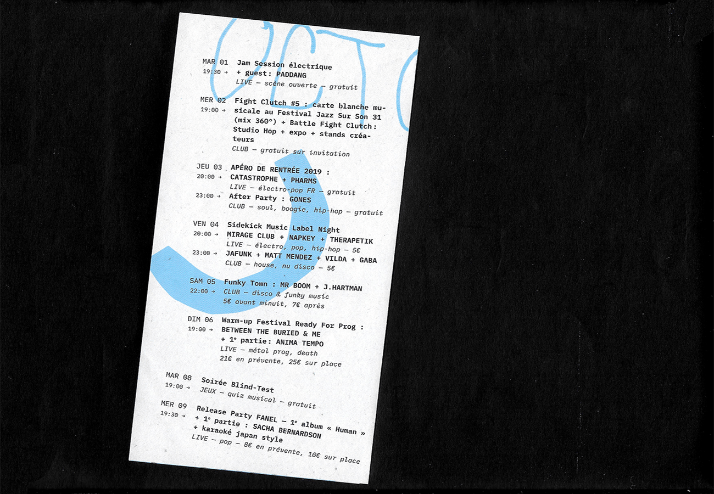
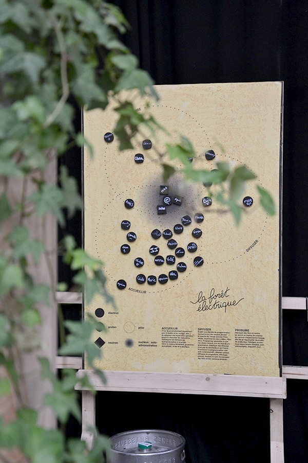
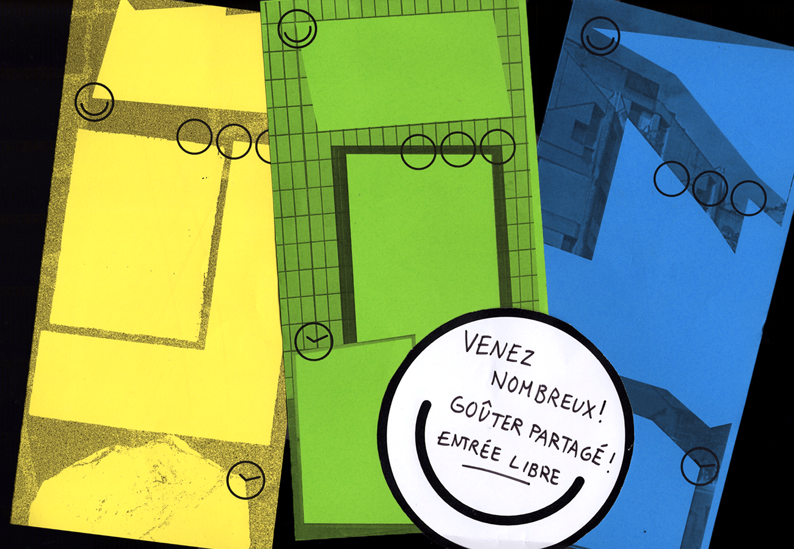

- 
Identité graphique de la programmation
du Connexion Live, pour son anniversaire :
"10 ans de Connexion Live, toujours pas sage !"
Identité déployée en affiches et programmes
mensuels
et réalisation des bâches extérieures.
Projet réalisé avec ☞ Léa Sefsaf.
— septembre 2019
- 


La Forêt Électrique est un cinéma éphémère indépendant,
à Toulouse. Elle est en majorité composée de bénévoles :
électrons, protons et neutrons qui gravitent et stabilisent
l’atome autour de 3 pôles. Organique, la Forêt évolue
avec ses membres qu’ils soient au niveau de l’accueil,
de la diffusion ou de la production et se placent
en fonction de leur implication : de l’électron
qui gravite à l’extérieur de l’atome,
jusqu'au proton qui stabilise la structure.
Cette affiche aimantée a été conçue comme un outil
pour l'écosystème derrière la Forêt Électrique :
visualiser les différents rôles, faire communauté,
s’organiser et servir de support à la médiation.
— juillet 2018


Identité graphique de la Ferme de la Mhotte :
conçue telle la cartographie des liens qui s'établissent
entre les différentes structures qui composent la Ferme,
reflet de ce qu'elles sont en pratique. Les supports
ont été imprimés sur place en risographie,
permettant ainsi une auto-édition.
L'identité graphique a aussi été développé
en signalétique et sur le site internet.
— juillet 2017
- 


MEMO : Maison de quartier En MOuvement
Système d’affichage autonome de la programmation
de la Maison de Quartier du Petit-Ivry, afin de rendre
visible la diversité des associations présentes et de
concevoir un outil commun au service de la coopération.
Le mur se lit tel un tableur : il organise les associations
par public visé et par ordre chronologique, au cours
du mois. Pour le lancement : édition d'un parcours urbains
pour inviter les ivryens à (re)découvrir leur quartier.
En collaboration avec le collectif Ne Rougissez Pas.
— juin 2016